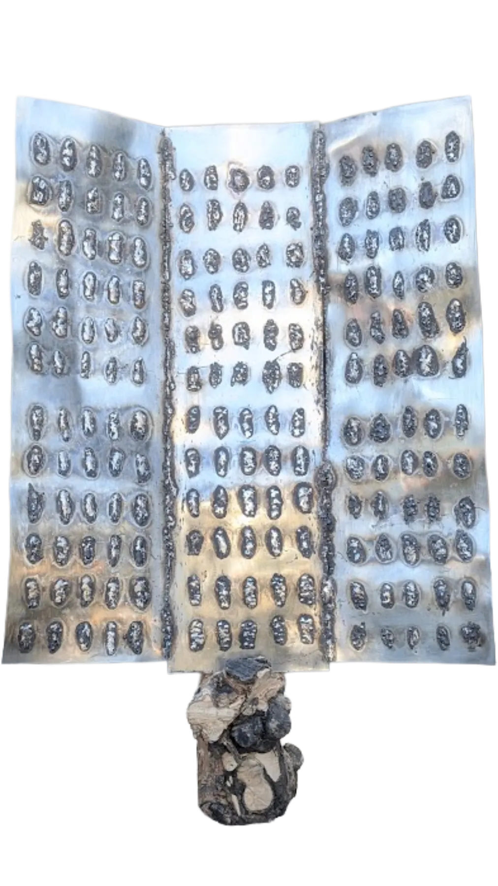
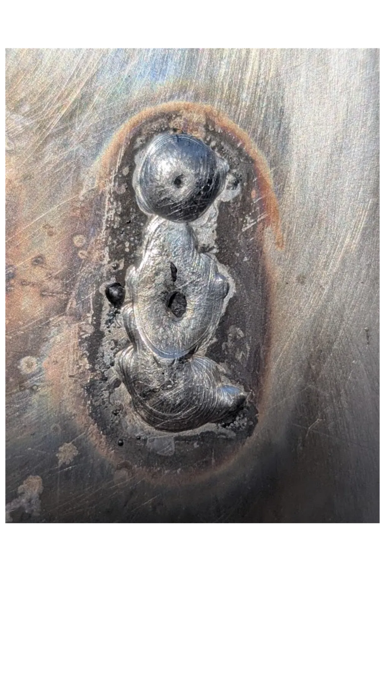
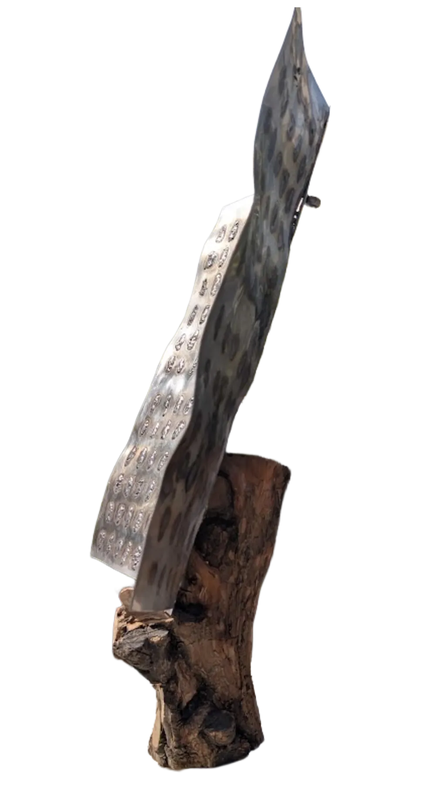

V · Landscapes of War
Susan Sontag warned us: one should not assume a 'we' when looking at the pain of others.
I am not them. I was not in Minab that morning. I did not lose a child in the classroom. I look from the studio, from a distance that no weld can close.
But I look. And refusing to look away is already a minimal form of justice.
The 180 marks on the steel do not pretend to speak for anyone. They are not symbol, not homage. They are a material record, stubborn, that does not extinguish with the next headline.
There are three positions facing the pain of others: the voyeur, the witness, the consumer. None is mine. I was not there, I do not feed on the spectacle, nor do I digest it passively. I choose a fourth: the one who remembers and knows himself to be a debtor.
Welding 180 marks is paying, in the only language I have, a debt that no one claimed from me but that implicates me. Not revenge — it is refusing to let the names dissolve into noise.



LGP-SPG-2026-006
| Material | Recycled stainless steel · olive wood base |
| Dimensions | 59 × 50 cm · pie 20 × 10 cm |
| Year | 2026 |
| Edition | Unique piece · 3 panels |
| Marks | 180 welded marks |
| Status | Available |
The medieval triptych was a liturgical device. Three panels joined by hinges, a narrative centre —Adoration, Crucifixion, Annunciation—, wings that opened on feast days and closed in ordinary time. A mechanism of appearing and concealing in the service of a promise: pain has a frame, suffering has meaning, history closes in redemption.
180 inherits the format and withdraws the promise.
The wings are bent at 20° along the weld seams themselves. There are no hinges. The triptych does not close because death does not close. The right seam is left open, unhealed. The triptych does not narrate: each panel holds 60 identical weld marks, set in a 5×12 grid. 180 in all. Where the altarpiece inscribed the name of the saint, decimal coordinates are inscribed here —the same notation a missile uses to locate its target.
The polished steel gives viewers back their own reflection among the graves.
Medieval altarpieces promised resurrection. This one promises nothing. It only asks where you were.
Three panels of recycled stainless steel. 180 welded marks, one for each girl from the Shajareh Tayyebeh School in Minab, Iran. The exact number. The work does not speak for anyone — it records so that it is not forgotten.
The work was made in the days following the attack, when the figure of 180 deaths was being reported. Months later, the Iranian government confirmed a figure of 156 deaths.